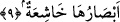
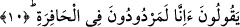
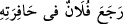
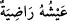

fiillerinin çirkinliğinden tir tir titrerler.”
Âyette yer alan vâcife kelimesini tir tir titremek olarak tefsir ettik. Çünkü bu
kelimeden türeyen el-vecif kalbin şiddetle sarsılmasından, korku ve heybetinden
endişeye kapılmasından ibarettir. Buradan anlaşılan odur ki; bütün kalpler, “el-vâcife:
titreyen” şeklinde vasfedilen kalpler arasında olmayacaktır. Bu durumda sâdece
kâfirlerin kalpleri olacaktır. Çünkü îman etmiş olanlar o gün korkmayacaklardır.
9. Gözler yorgun düşer,
“Gözler” Allah’tan yüz çevirdikleri, onun dışındakilere yöneldikleri için
korkularından “yorgun” ve zelil “düşer.”
“Gözler” ifâdesinden maksad, gözlerin sâhipleridir. Biz bunu âyetin devamında 10.
âyetteki “derler” ifâdesinden anlıyoruz. Yoksa bilindiği üzere kalplerin gözleri yoktur.
Şu halde gözlerin kalplere izâfe edilerek isim tamlaması yapılması, kalplerin korku
duyulan mahal olmasından dolayıdır. Şu halde korku, kalplere âid bir sıfat olmaktadır.
Hâşiatün kelimesini “korkudan zelildir” şeklinde tefsir ettik. Buna göre âyete şöyle
mânâ vermek mümkündür: “O gözlerin sâhipleri Allah Teâlâ’dan yüz çevirdikleri,
ondan başkasına yöneldikleri için korkularından zelildirler. O büyük ve şiddetli
gelişmelerden başlarına neyin geleceğini beklemektedirler.” “Huşu/korku” kelimesinin
gözlere isnâd edilmesi mecâzîdir. Çünkü korkunun eseri gözlerde görülür ve oradan
belli olur.
10. Öldükten sonra biz (dünyadaki) ilk hâlimize mi döndürüleceğiz?
Bu cümle beyân edici bir başlangıç cümlesidir. Onların ifâdeleri tefsir mâhiyetinde
şöyle beyân edilebilir: Öldükten sonra dirilmeyi inkâr eden ve bu gerçeği dile getiren
âyetleri yalan sayan o kimseler, kendilerine “sizler öldükten sonra diriltileceksiniz”
denildiğinde bunu inkâr edip tuhaf karşılayarak derler ki: “Öldükten sonra biz
dünyadaki ilk hâlimize yâni tekrar hayata mı döndürüleceğiz?”
Âyetteki el-hâfira kelimesini, “ilk hal/hayat” olarak tefsir ettik. Çünkü bu kök
arapçada “: filanca gelmiş olduğu yola geri döndü” tâbirinden
gelmektedir. Hafera fiili “yürüyerek yolda iz bıraktı” demektir. Şu halde yoldaki ize,
hâfira denmesi, ayak izlerinin yolda açmış olduğu çukurlardan dolayıdır. Hâfir ise o
yolda yürüyen kimse demektir. Dolayısıyla bu âyetteki hâfira kelimesi
“mahfûra/yoldaki iz” anlamındadır. Tıpkı;  dediğimizde “onun hayatı hoşnuttur”
değil, “onun hayatı, hoşnut olunan bir hayattır” anlamını kasdettiğimiz gibi. O halde